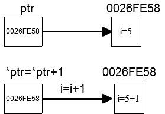
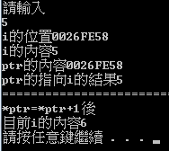

指標
|
 |
void main() { int * ptr;//宣告ptr的指標變數 int i;//變數i printf("請輸入\n"); scanf("%d",&i); ptr=&i;//把i的位置給ptr printf("i的位置%p\n",&i);//印出i的位置 printf("i的內容%d\n",i);//印出i的內容 printf("ptr的內容%p\n",ptr);//印出儲存在ptr的位置 printf("ptr的指向i的結果%d\n",*ptr);//印出ptr指向i後的結果 printf("==========================================\n"); *ptr=*ptr+1;//先ptr指向i加一後，再把結果指定給ptr指向i printf("*ptr=*ptr+1後\n"); printf("目前i的內容%d\n",i);//印出i的內容 } |
輸出結果:  |